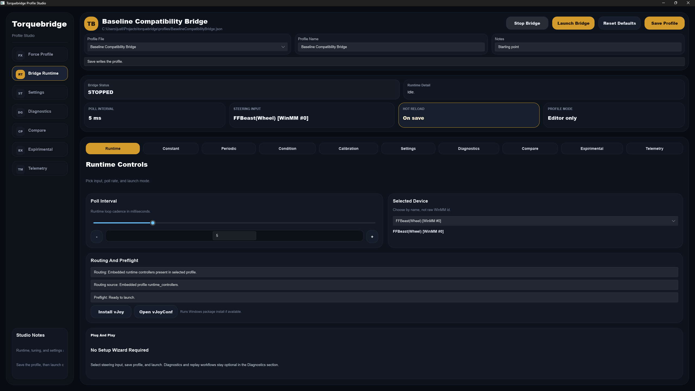
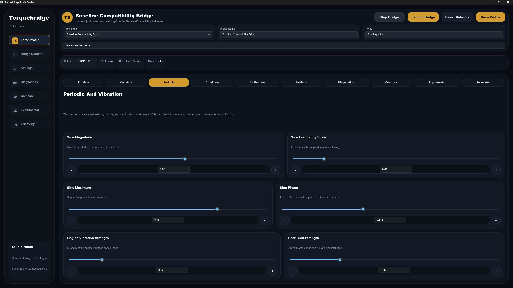
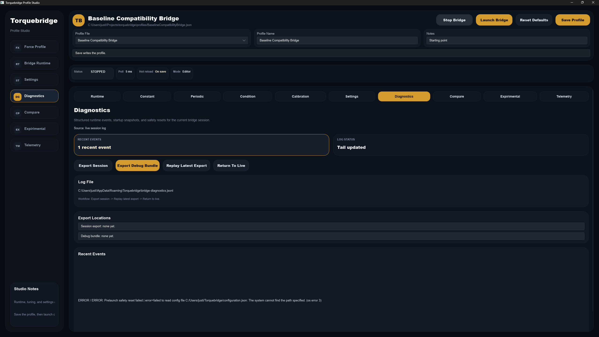
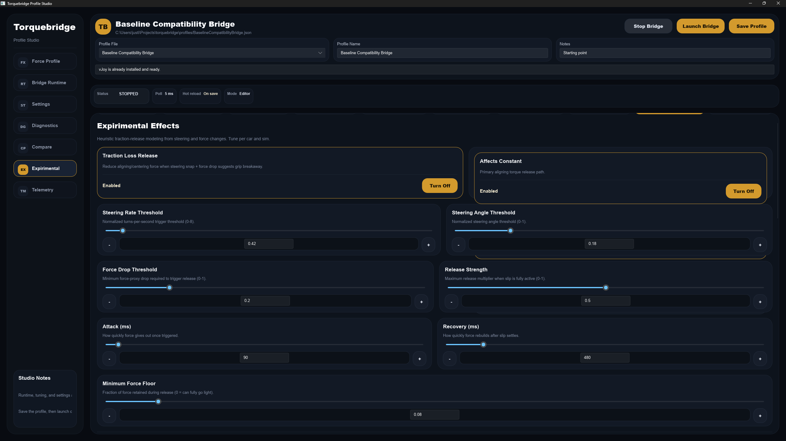
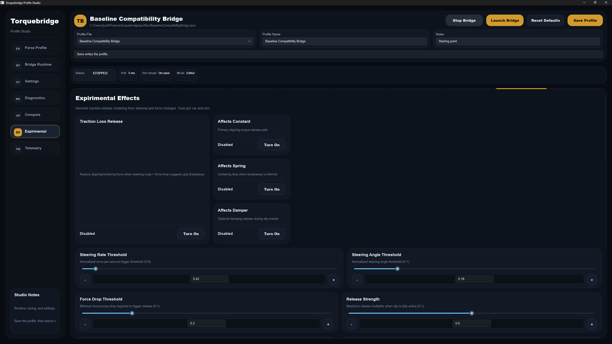
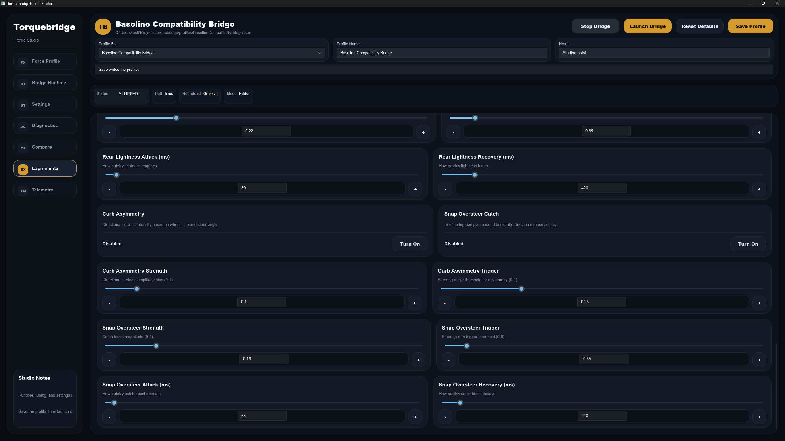
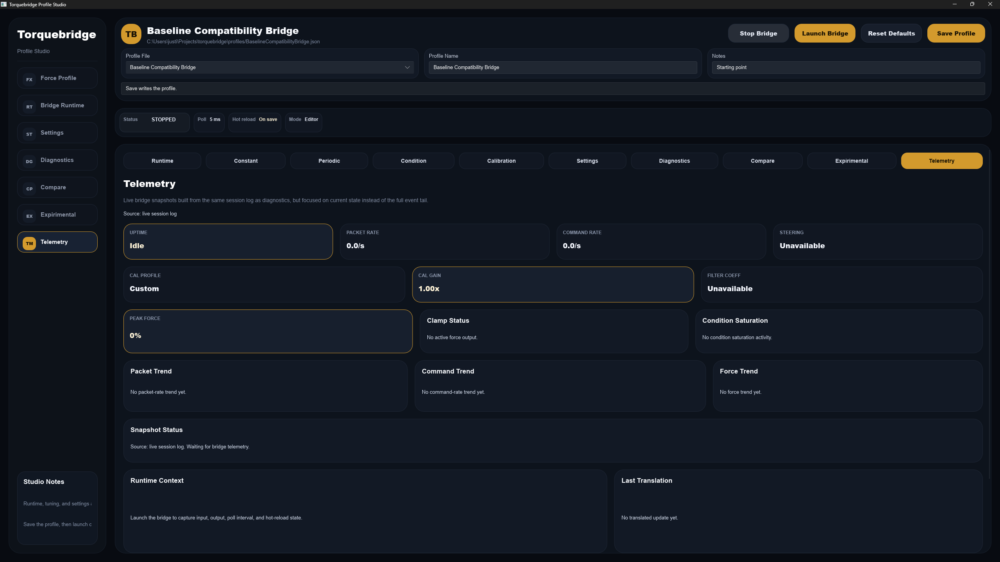

Forza + FFBeast wheel tuning
Torquebridge gives you a cleaner, more customizable way to drive.
It brings your Forza force feedback into a profile-based workflow so you can launch quickly, tune the wheel feel for each car or track, and keep everything easy to revisit later.
- Quick start with sensible defaults
- Save multiple profiles for different cars, tracks, and setups
- Optional advanced controls when you want more detail
- Built-in diagnostics and telemetry when you need to troubleshoot
Start with a base profile, pick your steering input, then use the tuning tabs to shape the wheel feel without fighting a maze of setup files.
Why Torquebridge
Faster to get driving
Open Profile Studio, choose your input, save once, and launch. The goal is to spend less time setting up and more time driving.
More control where it matters
Adjust force behavior in layers, from basic calibration all the way to experimental effects when you want extra detail.
Profiles you can come back to
Keep different setups for different driving styles, and return to them later without rebuilding the whole setup.
Built for troubleshooting
Diagnostics, telemetry, and launch preflight make it easier to see what the bridge is doing and why.
What You Can Customize
Core force feel
- Constant force
- Periodic and vibration behavior
- Condition effects for spring and damper
Calibration controls
- Output gain
- Per-effect gain
- Steering center, range, and curve
Experimental effects
- Traction loss release behavior
- Inferred dynamics toggles and thresholds
- Optional per-effect shaping and recovery tuning
How It Feels In Practice
Start from a clean baseline
The default profile gives you a safe starting point so you can dial in the feel instead of starting from zero every time.
Tune while you test
Small changes are easy to save and compare, which makes it simpler to move from “close” to “right”.
Use advanced tools only when needed
Diagnostics, telemetry, and experimental effects are there when you want them, but they do not get in your way when you just want to drive.
Screenshots
Main screen
The landing view for profiles and runtime controls. This is where you pick the steering device, save your profile, and launch the bridge.

Periodic and vibration panel
Use this area to shape the texture and energy of the wheel. It is especially useful when you want stronger road feel without turning the wheel into a constant buzz.

Diagnostics
The diagnostics view is for exports, session review, and troubleshooting. It helps you see what happened in a bridge session and share it cleanly when something needs checking.

Experimental effects, page 1
The first experimental page shows traction-loss release shaping and the first group of inferred dynamics controls. This is where you start pushing the profile beyond the basic wheel feel.

Experimental effects, page 2
The second experimental page continues the inferred dynamics controls with more tuning for car-specific behavior and response changes.

Experimental effects, page 3
The third experimental page rounds out the deeper tuning set so you can keep all of the related controls together in one place.

Telemetry
Telemetry gives you live runtime snapshots, packet rates, force trends, and translation state so you can see what the bridge is doing while you drive.

Getting Started
1. Open the app
Run the Profile Studio UI and select the steering input you want to use.
2. Save the profile
Once your steering device is selected, save the profile so the runtime state stays attached to it.
3. Launch and tune
Start the bridge, drive, and make small changes until the wheel feels right for the car or event you are in.
Need to reset?
Reset Defaults brings the current profile back to the baseline tune so you can start over cleanly without rebuilding your layout or routing choices.
Developer / Contributing / Technical
Build and test
cargo run -- ui
cargo test
Repository layout
src for runtime and translation logic, ui for the editor, profiles for tuning data, and docs for roadmap/architecture notes.
Release process
Merge into the release branch to trigger the packaging workflow. Tags use date-based versions like vYYYY.MM.DD and vYYYY.MM.DD.N.
Screenshot assets
The README and this page both use files in docs/screenshots so the gallery stays simple to maintain.